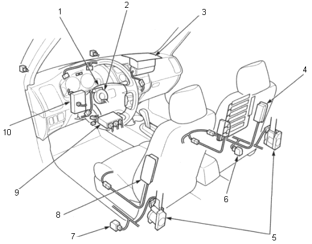

General Information
Supplemental Restraint System (SRS)
|
1-4 |
|
This model has an SRS which includes a driver's airbag in the steering wheel hub, a passenger's airbag in the dashboard above the glove box, seat belt tensions in the front seat belt retractors and side airbags in the front seat backs. The SRS unit is separate from the airbag assembly and has built-in sensors. The following precautions should be observed when performing sheet metal work, paint work and repair work around the locations of the SRS components.
- The SRS unit (including the safing sensor and the impact is located under the dashboard and the side impact sensors are located in each side still. Avoid any strong Impact with a hammer or other tools when repairing the front side frame, the lower part of the dashboard and the side sill. Do not apply heat to these areas with a torch, etc.
- Take extra care when painting or doing body work in the area below the centre pillar. Avoid direct exposure of the seat belt retractor with tensioner to heat guns, welding or spraying equipment.
- SRS electrical wiring harness are identified with yellow colour coding. Care should be taken not to damage the harness when repairing this area.
- Do not apply heat of more than 212°F (100°C) when drying painted surfaces anywhere around the locations of SRS components.
- If strong impact or high temperature needs to be applied to the areas around the locations of SRS components, remove the Components before performing the repair work.
- If any of the SRS related components are damaged or deformed, be sure to replace them.
NOTE: Refer to the Restraints section of the Shop Manual for after deployment, and removal and replacement of SRS related components.
 |
- DRIVER'S AIRBAG ASSEMBLY
- CABLE REEL
- FRONT PASSENGER'S AIRBAG ASSEMBLY
- SIDE AIRBAG
- SEAT BELT TENSIONERS
- SIDE IMPACT SENSOR
- SIDE IMPACT SENSOR
- SIDE AIRBAG
- SRS UNIT
(with built-in sensor)
- UNDER-DASH FUSE/RELAY BOX
|